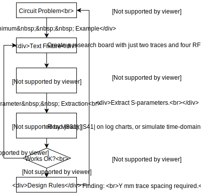

Start from the Basics
Many newcomers to the field of electromagnetic wave simulation have a practical goal in mind, for example, the author of this tutorial’s goal was to understand signal and power integrity problems in circuit board design. However, the author must warn all readers that it’s impractical to start working on these big projects right away. It’s necessary to start from the basics first. The reason is twofold.
Firstly, by modeling the simplest possible devices, it allows one to learn about the mechanics of openEMS and FDTD - what does it do, how to program it, and how to use the result - without additional complications.
Secondly, simplified models are necessary not only in learning but in practical applications. While openEMS itself implements the general-purpose Finite-Difference Time Domain (FDTD) engine, which in principle has many applications and few limitations. But it’s an academic solver at its core. Unlike proprietary industrial tools, it knows only about materials and fields, without high-level concepts such as waveguides, circuit boards, connnectors, vias, etc. These are modeled from creating (or importing) geometrical shapes by programming. Similarly, analyzing or interpreting simulation data must be done by the users themselves in their own postprocessing code. Thankfully, once with a circuit’s frequency response (known as its S-parameters) is obtained, a wide variety of circuit tools are available to analyze and simulate them, which we will cover later.
{kind=link}
In the long run, high-level tools on top of openEMS may enable board-level modeling (in fact, several third-party tools or library tools already exist, albeit highly experimental). At the present stage, it’s important to proceed realistically: rather than simulating a full system, openEMS is best used when one reduces the problem at hand to its simplest form by creating virtual “test fixtures” or “test coupons” to test an isolated aspect of the design, such as line impedance or crosstalk at a given electrical spacing. Insights obtained from these tests can then be used to supply design data and rules for practical projects, this approach avoids the difficulties of simulating the full system, and is quite similar to how RF/microwave design was done in the old days, but now in a virtual lab in cyberspace. This can still provide significant time-saving in comparison to empirical experiments.
Workflow of FDTD
The workflow of any openEMS simulation boils down to the following.
3D Modeling: First, create an empty simulation box and start building 3D objects. Objects are built from simple geometrical shapes programmatically.
Meshing: Next, one creates a 3D Cartesian mesh, which determines how the simulation box is discretized into small rectangular cuboids, known as Yee’s cells. They’re the basic unit of computation in a simulation run. Correct and optimized mesh can ensure or improve numerical accuracy, while suboptimal or incorrect mesh can create a loss of precision or induce instability (blow-ups) in the simulation. Problem often occurs while trying to align the model and the mesh, so the model must be co-designed with mesh coordinates in mind. 3D modeling and meshing is usually the most labor-intensive part of the simulation.
Port and Excitation: Next, create one or more ports. At one port, apply the excitation signal of your choice. A Gaussian pulse is the standard here, as it provides a broadband signal without discontinuous jumps, which may create numerical problems. Once the frequency response is obtained, linear circuit tools can analyze circuit behaviors under other inputs, so there’s no loss of generality. Once the simulation is started, the electric or magnetic fields at the cells around the excitation port is filled with initial values, which are then evolved over time.
Boundary Conditions: Furthermore, since the simulation box has a finite size, we must decide what to do once the E&M field reaches the edge of the box by selecting the appropriate boundary conditions.
Simulation Run: Electromagnetic energy is injected by an excitation port until total energy in the box decays to zero. Time-domain waveforms are obtained after the simulation ends. Frequency responses (i.e. S-parameters) are then calculated from time-domain data. Although FDTD is a time-domain method, the wide use of S-parameters in RF/microwave circuit analysis often makes frequency domain data more useful. Optionally, openEMS can also dump the raw 3D fields during the simulation, which can be used for visualization and debugging.
Data Analysis: openEMS itself is only a field solver, not a structure characterization or circuit analysis tool (with the exception of antenna radiation pattern analysis). It’s up to the users to interpret the data using various third-party libraries and tools, such as textbook formulas, numerical fitting, Python library
scikit-rf, SignalIntegrity software, Qucs-S circuit simulator, etc.
This is enough theory for our purpose. As the first lesson, let’s try modeling a parallel-plate capacitor to see how everything fits together.